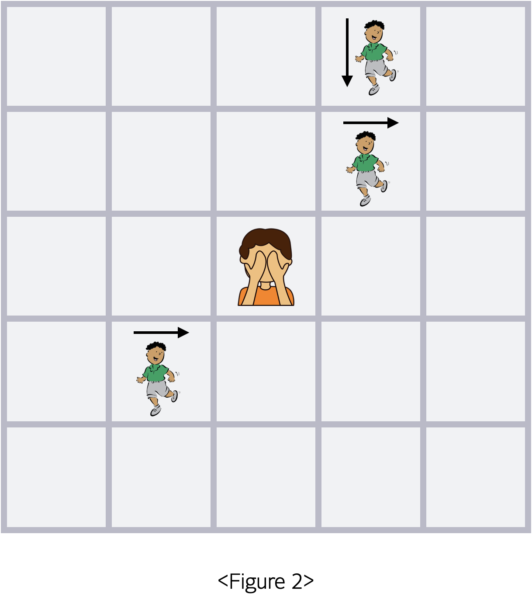
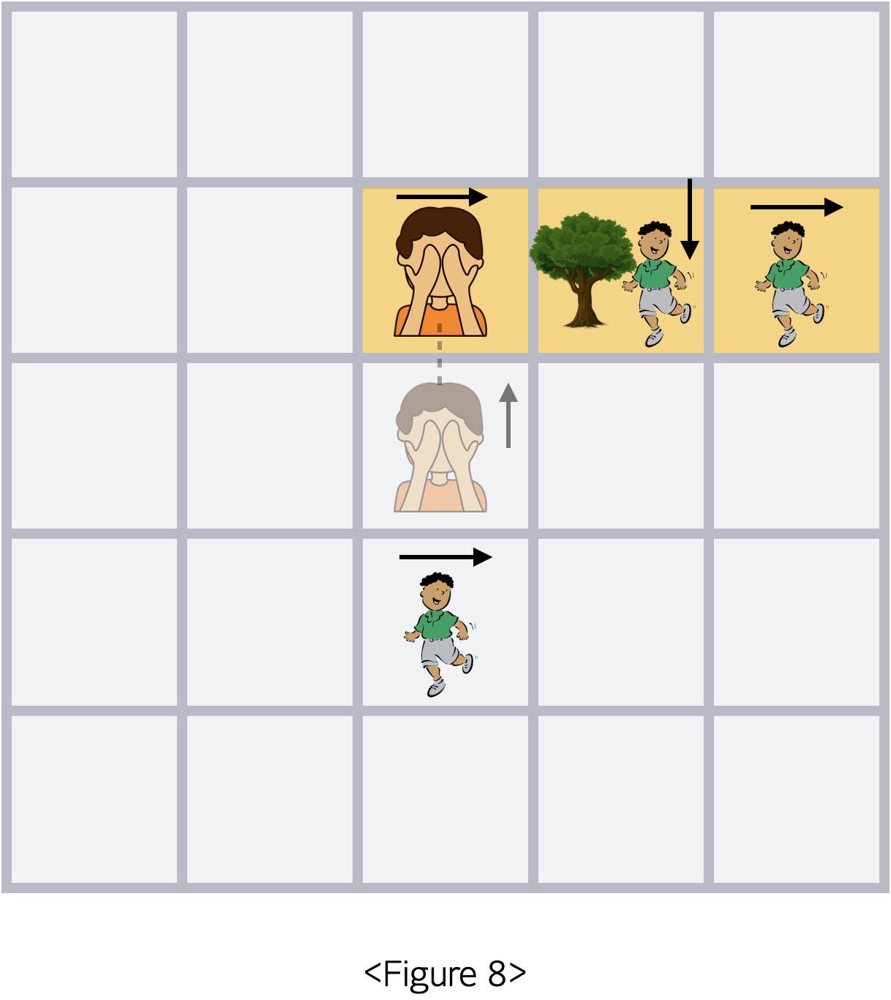
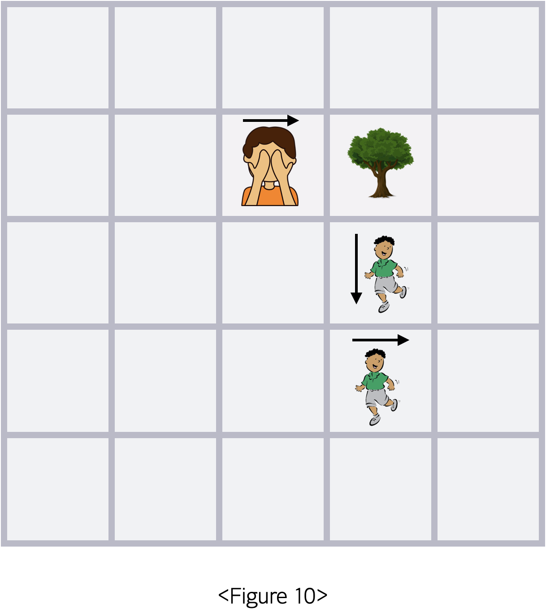

술래잡기 게임을 진행해보려고 합니다. 술래잡기 게임은 n * n 크기의 격자에서 진행되며 술래는 처음 정중앙에 서있습니다.
술래잡기 게임에는 m명의 도망자가 있습니다. 도망자는 처음 지정된 곳에 서있습니다. 도망자는 중앙에서 시작하지는 않습니다. 도망자의 종류는 좌우로만 움직이는 유형과 상하로만 움직이는 유형 이렇게 2가지가 있습니다. 이때 좌우로 움직이는 사람은 항상 오른쪽을 보고 시작하며, 상하로 움직이는 사람은 항상 아래쪽을 보고 시작합니다.
예로 3명의 도망자(m = 3)가 주어진 경우를 가정해보겠습니다.
또, 이 술래잡기 게임에는 h개의 나무가 있습니다.
예로 하나의 나무(h = 1)가 있는 경우를 가정해보겠습니다. 이처럼 나무가 도망자와 초기에 겹쳐져 주어지는 것 역시 가능합니다.
술래잡기 게임에서는 m명의 도망자가 먼저 동시에 움직이고, 그 다음 술래가 움직이고, 도망자가 움직이고, 술래가 움직이고, ... 이렇게 도망자가 1턴 그리고 이어서 술래가 1턴 진행하는 것을 총 k번 반복하게 됩니다.
이때 도망자가 움직일 때 현재 술래와의 거리가 3 이하인 도망자만 움직입니다. 도망자의 위치가 (x1, y1), 술래의 위치가 (x2, y2)라 했을 때 두 사람간의 거리는 |x1 - x2| + |y1 - y2|로 정의됩니다.
술래와의 거리가 3 이하인 도망자들은 1턴 동안 다음 규칙에 따라 움직이게 됩니다.
- 현재 바라보고 있는 방향으로 1칸 움직인다 했을 때 격자를 벗어나지 않는 경우
- 움직이려는 칸에 술래가 있는 경우라면 움직이지 않습니다.
- 움직이려는 칸에 술래가 있지 않다면 해당 칸으로 이동합니다. 해당 칸에 나무가 있어도 괜찮습니다.
- 현재 바라보고 있는 방향으로 1칸 움직인다 했을 때 격자를 벗어나는 경우
먼저 방향을 반대로 틀어줍니다. 이후 바라보고 있는 방향으로 1칸 움직인다 헀을 때 해당 위치에 술래가 없다면 1칸 앞으로 이동합니다.
위의 규칙에 따라 Figure 3 에서 도망자가 1턴 동안 움직인 이후의 모습은 다음과 같습니다.
이후 술래가 1턴 움직이는 경우를 살펴보겠습니다.
술래는 처음 위 방향으로 시작하여 달팽이 모양으로 움직입니다.
만약 끝에 도달하게 되면 다시 거꾸로 중심으로 이동하고, 다시 중심에 오게 되면 처음처럼 위 방향으로 시작하여 시계뱡향으로 도는 것을 k턴에 걸쳐 반복하게 됩니다.
술래는 1번의 턴 동안 정확히 한 칸 해당하는 방향으로 이동하게 됩니다. 이동 후의 위치가 만약 이동방향이 틀어지는 지점이라면, 방향을 바로 틀어줍니다. 만약 이동을 통해 양끝에 해당하는 위치인 (1행, 1열) 혹은 정중앙에 도달하게 된다면 이 경우 역시 방향을 바로 틀어줘야 함에 유의합니다. Figure 4에서 술래가 한 칸 이동하게 되면, 술래는 바로 방향을 틀게 됩니다.
이동 직후 술래는 턴을 넘기기 전에 시야 내에 있는 도망자를 잡게 됩니다. 술래의 시야는 현재 바라보고 있는 방향을 기준으로 현재 칸을 포함하여 총 3칸입니다.
하지만 만약 나무가 놓여 있는 칸이라면, 해당 칸에 있는 도망자는 나무에 가려져 보이지 않게 됩니다. 따라서 Figure 8의 경우에서는 (2행, 5열)에 있는 도망자만 잡히게 됩니다. 잡힌 도망자는 사라지게 되고, 술래는 현재 턴을 t번째 턴이라고 했을 때 t x 현재 턴에서 잡힌 도망자의 수만큼의 점수를 얻게 됩니다. 따라서 Figure 8의 상황에서 술래는 1 x 1인 1점을 얻게 되고 (2행, 5열)에 있던 도망자는 사라지게 됩니다.
그 다음에는 다시 도망자의 턴이 진행되고, 이어서 술래의 턴이 진행되는 것을 총 k번에 걸쳐 반복하게 됩니다.
만약 k = 2였다면, 이제 2번째 턴이 진행되어야 합니다.
2번째 턴에서 먼저 도망자가 움직이게 됩니다.
이후 술래는 한 칸 앞으로 움직이게 됩니다. 이때 역시 이동방향이 틀어지는 지점이므로, 이동후 바로 방향을 틀게 됩니다. 이 경우 남은 두 도망자가 모두 잡히게 되어2(번째 턴) x 2(명의 도망자) 에 해당하는 4점을 추가적으로 얻게 됩니다.
k번에 걸쳐 술래잡기를 진행하는 동안 술래가 총 얻게된 점수를 출력하는 프로그램을 작성해보세요.
입력 형식
첫 번째 줄에 n, m, h, k가 공백을 사이에 두고 주어집니다. n은 반드시 홀수입니다.
이후 m개의 줄에 걸쳐 도망자의 위치 (x, y)와 이동 방법 d가 공백을 사이에 두고 차례대로 주어집니다. 이동 방법 d가 1인 경우 좌우로 움직임을, 2인 경우 상하로만 움직임을 뜻합니다. 또한, 좌우로 움직이는 사람은 항상 오른쪽을 보고 시작하며, 상하로 움직이는 사람은 항상 아래쪽을 보고 시작함에 유의합니다.
이후 h개의 줄에 걸쳐 나무의 위치 x, y가 공백을 사이에 두고 차례대로 주어집니다.
도망자끼리 위치가 겹쳐져 주어지는 경우는 없으며, 나무들 역시 위치가 겹쳐져 주어지는 경우는 없다고 가정해도 좋습니다.
- 5 ≤ n ≤ 99
- 1 ≤ m, h ≤ n**2
- 1 ≤ k ≤ 100
- 1 ≤ x, y ≤ n
출력 형식
술래가 k번의 턴 동안 얻게되는 총 점수를 출력합니다.
입출력 예제
예제 1
입력 :
5 3 1 1
2 4 1
1 4 2
4 2 1
2 4
출력 :
1
예제 2
입력 :
5 3 1 2
2 4 1
1 4 2
4 2 1
2 4
출력 :
5
제한
시간제한 : 1000ms
메모리 제한 : 80MB